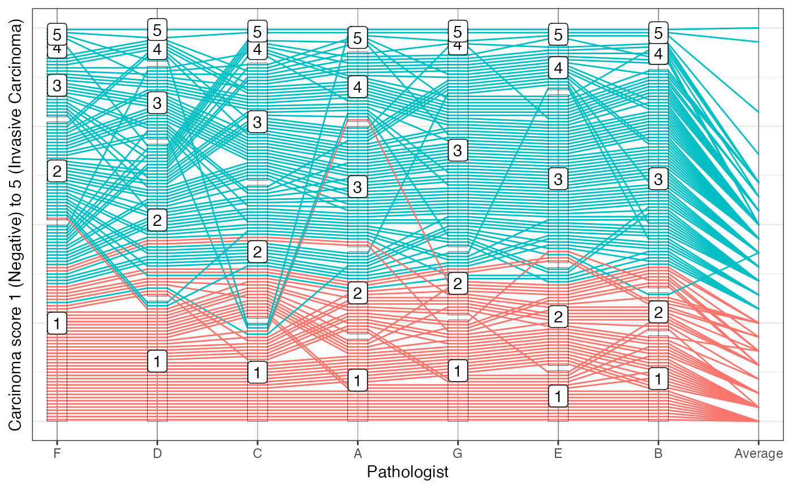

A differently formatted data is set available as carcinoma in package poLCA.
Here, pathologists' ratings are recorded
Source
Data published as Table 1 in Landis, J. Richard, and Koch, Gary G. "An Application of Hierarchical Kappa-type Statistics in the Assessment of Majority Agreement among Multiple Observers." Biometrics 33.2 (1977): 363-74, doi:10.2307/2529786 .
Study and Design in Holmquist, Nelson D., McMahan C.A., Williams O. Dale. Variability in classification of carcinoma in situ of the uterine cervix. Arch Pathol. 1967 Oct;84(4):334-45. PMID: 6045443, doi:10.1097/00006254-196806000-00023 .
Overall structure
- No
slide number 1 through 126 (data for slides 14, 20, 21, 50, 75, 97, 109, and 125 are missing)
- Average
average rating of all eight pathologists.
Pathologist ratings
- A
scores 1 to 5 of pathologist's A evaluation (1) Negative; (2) Atypical Squamous Hyperplasia; (3) Carcinoma in Situ; (4) Squamous Carcinoma with Early Stromal Invasion; (5) Invasive Carcinoma.
- B
scores by pathologist B.
- C
scores by pathologist C.
- D
scores by pathologist D.
- E
scores by pathologist E.
- F
scores by pathologist F.
- G
scores by pathologist G.
Examples
library(ggplot2)
Carcinoma |>
pcp_select(F, D, C, A, G, E, B, Average) |>
pcp_scale(method="uniminmax") |>
pcp_arrange() |>
ggplot(aes_pcp()) +
geom_pcp_axes() +
geom_pcp(aes(colour = Average > 2)) +
geom_pcp_boxes(colour="black", alpha=0) +
geom_pcp_labels(aes(label = pcp_level), fill="white", alpha = 1) +
theme_bw() +
scale_x_discrete(expand = expansion(add=0.25)) +
xlab("Pathologist") + ylab("Carcinoma score 1 (Negative) to 5 (Invasive Carcinoma)") +
theme(axis.text.y=element_blank(), axis.ticks.y=element_blank(), legend.position="none")
#> Scale for x is already present.
#> Adding another scale for x, which will replace the existing scale.
